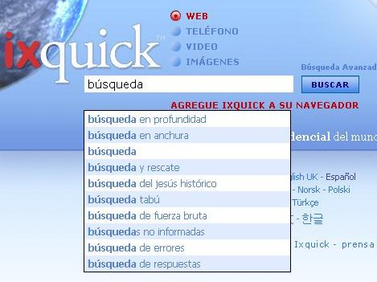

Configuración
Generador de URL
Guardar la configuraciÓn sin cookies
Ixquick continúa ofreciéndole características que mejoran la privacidad para realizar búsquedas en Internet con seguridad. |
Elija su servidor para buscar
|
Explicación de las sugerencias de búsqueda | ||
|
Q: ¿Cómo habilito las sugerencias de búsqueda? A: Si desea habilitar las sugerencias de búsqueda, selecciónelas en la pagina “Configuración”. La página “Configuración” se puede seleccionar en cualquier página de Ixquick. |  | |
|
Q: ¿Cómo funcionan las sugerencias de búsqueda de Ixquick? A: Cuando usted escribe una solicitud de búsqueda, buscamos la coincidencia del término de su solicitud con una gran cantidad de sugerencias de las sugerencias generales, y los términos coincidentes más populares se muestran por orden descendente de popularidad. | ||
|
Q: ¿En qué se diferencian las sugerencias de búsqueda de Ixquick de las de otros motores de búsqueda? A: La mayoría de los demás motores de búsqueda se basan en las búsquedas reales de los usuarios para elaborar las sugerencias de búsqueda. Por consiguiente, con el simple hecho de escribir su solicitud, usted se entera de lo que las otras personas buscan con más frecuencia. Ixquick, pionero en garantizar la privacidad del usuario, no se deja tentar por este método. Mostramos las sugerencias relevantes generales para cualquier solicitud que usted escriba. | ||
|
Q: Entonces, ¿de dónde provienen las sugerencias de Ixquick? A: Nuestras sugerencias provienen de diversas fuentes que abarcan desde palabras de diccionarios hasta páginas de interés comunes disponibles gratuitamente en Internet, por ejemplo, las páginas de Wikipedia. | ||
|
Q: ¿Las sugerencias están disponibles en todos los idiomas? A: Sí, las sugerencias están disponibles en todos los idiomas que Ixquick ofrece. | ||
|
Q: ¿Ixquick también muestra sugerencias pagas? A: No. Las sugerencias se basan netamente en su popularidad relativa. No hay publicidad involucrada. | ||
|
Q: ¿Puedo ver las sugerencias en inglés para algunas palabras claves mientras estoy usando Ixquick en alemán, por ejemplo? ¿A qué se debe eso? A: Claramente, el inglés es el idioma principal de la Web. Aunque nuestro algoritmo devuelve primero las sugerencias específicas para su idioma, en el caso de que no haya suficientes sugerencias que coincidan con su consulta en el idioma de su preferencia, le ofreceremos algunas sugerencias en inglés. Por supuesto, las sugerencias en su idioma se muestran primero en el orden de clasificación. | ||
|
Q: ¿Puedo esperar ver sugerencias personalizadas en el futuro? A: Como ya sabe, no almacenamos información personal de nuestros usuarios. En consecuencia, no podemos ofrecer sugerencias personalizadas porque sería una forma de invadir su privacidad. | ||
|
Q: No quiero que a mi hijo se le sugieran términos de adultos. ¿Puedo estar seguro de eso? A: Por supuesto. Las sugerencias funcionan en forma sincronizada con los valores de configuración de los filtros web/imágenes para la familia. Si la configuración del filtro se establece para filtrar resultados para adultos durante la búsqueda, nuestro algoritmo hará el máximo esfuerzo para no mostrar sugerencias que contengan términos de adultos. | ||
|
Q: Tengo habilitadas las sugerencias de búsqueda, pero no veo ninguna sugerencia. ¿Cuál puede ser el motivo? A: Verifique y asegúrese de que el explorador tenga habilitado Javascript, un elemento indispensable para que funcionen las sugerencias de búsqueda. | ||
|
Q: No uso “cookies” o las elimino con frecuencia. ¿Aun así puedo utilizar la opción de sugerencias de búsqueda? A: Sí, puede hacerlo. Por ser un motor de búsqueda de máxima privacidad, hemos creado una opción “Generate URL” (Generar URL), que le permite guardar sus preferencias en una URL, en lugar de tener que usar una cookie. La opción “Generate URL” está disponible en la parte inferior de la página “Settings”. |
||
¿Qué son las “cookies”? ¿Ixquick utiliza alguna?
Una cookie es un pequeño trozo de dato que se envía y se guarda en el disco duro de su equipo al visitar un sitio. Ixquick utiliza sólo una cookie llamada “preferencias”. Esta cookie es para recordar las preferencias de búsqueda que guardó para su próxima visita. Caduca después de que no ha visitado Ixquick durante 90 días y es anónima.